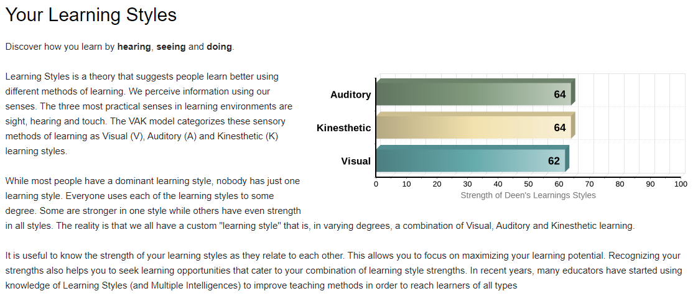
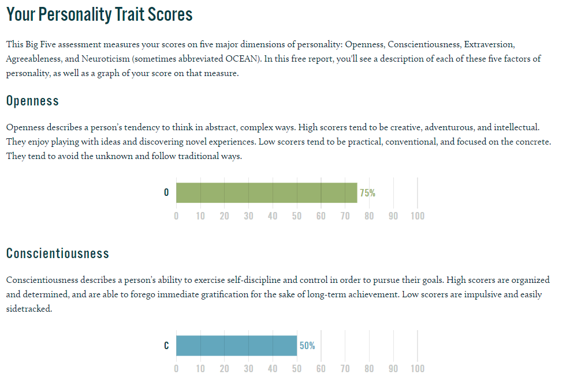
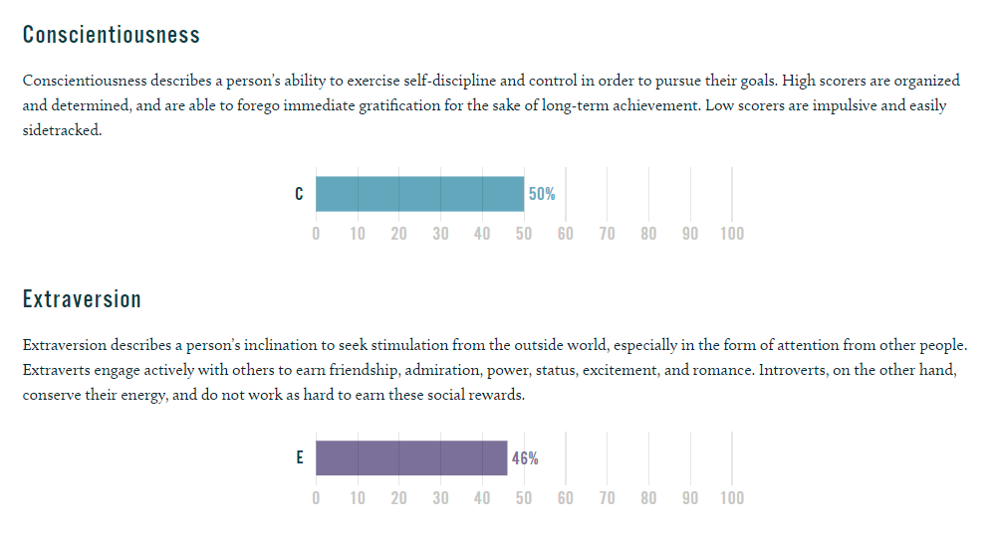
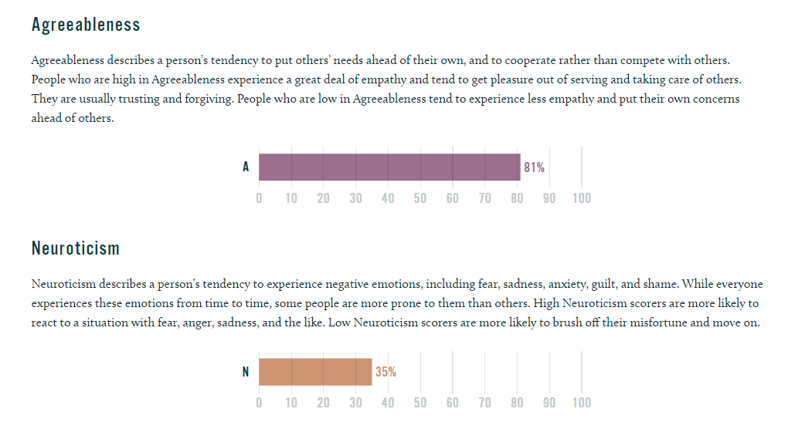

Thoughtful and idealistic, these personality types strive to have a positive impact on other people
and the world around them. They rarely shy away from an opportunity to do the right thing,
even when doing so is far from easy. Their passion and charisma allow them to inspire others not just in their careers
but in every arena of their lives, including their relationships. Few things bring Protagonists a deeper sense of joy
and fulfillment than guiding friends and loved ones to grow into their best selves.
Strength
Receptive
Reliable
Passionate
Altruistic
Charismatic
Weakness
Unrealistic
Overly Idealistic
Condescending
Intense
Overly Empathetic
Team Composition
o A Wealth of Perspectives -- Protagonists surround themselves with all sorts of friends and acquaintances,
including those whose experiences and ideas differ wildly from their own.
o Through Thick and Thin -- From their closest friends to their wide circle of acquaintances,
Protagonist personalities approach relationships with a sense of purpose, creating bonds that are not easily broken.
o Finding Balance -- As they mature, many Protagonists learn to avoid taking their friends’ behavior personally.
Learning Style Test

Big Five Personality Test



>---What do the results of these tests mean for you?---<
For me, these tests are only for a reference reflecting my personality at this time, but I do think
my personality will change over time, thus these tests cannot reflect my actual personalities.
But to some degree, these tests can express my personality in a simple/easy understanding way within a short period of time.
>---How do you think these results may influence your behaviour in a team?---<
I don't think it will influence my behaviour in a team, but it will inluence
how other teams members feel and how they treat me while during group works.
>---How should you take this into account when forming a team?---<
I woould call myself as a supportive person, which means I join any team with less or even no pressure.
When forming a team, I will passively waiting for team to form, I don't mind to join any kind of teams.